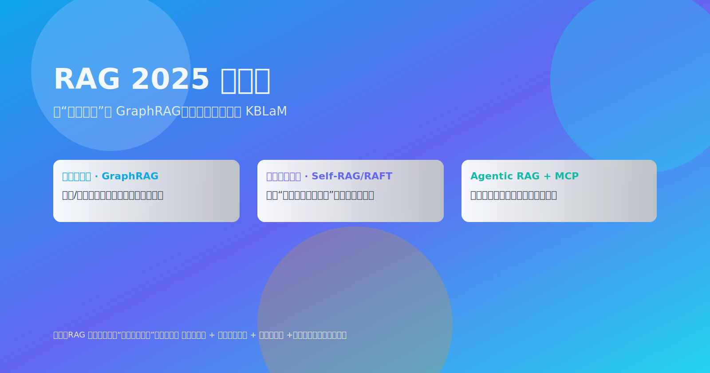

RAG 会被淘汰吗？从“大上下文”到 GraphRAG、检索感知训练与 KBLaM 的 2025 路线图
发表于 2025-09-02 · 预计阅读 9 分钟

未来判断
更长上下文≠RAG 终点，工程上仍需检索与可审计性。
- 长上下文降低检索频率，但无法替代“可追溯证据链”。
- 工业场景更看重稳定性、成本与合规留痕。
- 答案需要“可解释+可复现”，而不仅是“看起来正确”。
KBLaM
定位：可信知识、证据链与受限环境的稳定性。
KBLaM（Knowledge-Backed Language Model）强调“以知识为一等公民”。核心三件事：
- 结构化与半结构化知识的统一检索（文本+图谱）。
- 检索感知训练，让模型学会“何时检索、检什么”。
- 可审计算法与工具链：来源、版本与使用范围明确。
升级路线
- Self-RAG / RAFT / RA-DIT（检索感知）
- GraphRAG（结构化检索）
- Agentic RAG + MCP
- 模型编辑（必要时）
- 新鲜度检索
工程建议：先打好“检索与数据治理”底座，再考虑昂贵的参数级更新。
选型矩阵
根据时效、规模、结构化需求选择路线。
- 高时效+强结构：GraphRAG + 实时爬取/流式索引。
- 强可审计：Self-RAG/RAFT + 明确证据链存档。
- 工具复杂多样：MCP 统一协议，Agent 负责编排。
参考与延伸阅读（官方来源）
- Self-RAG： arXiv · OpenReview · GitHub
- RAFT（Retrieval-Augmented Fine-Tuning, 2024）： arXiv
- RA-DIT（2023）： arXiv · OpenReview
- GraphRAG： Microsoft Research Blog · GitHub
- MCP： Anthropic Announcement · GitHub · The Verge
- Google Gemini 1.5（长上下文）： Official Blog